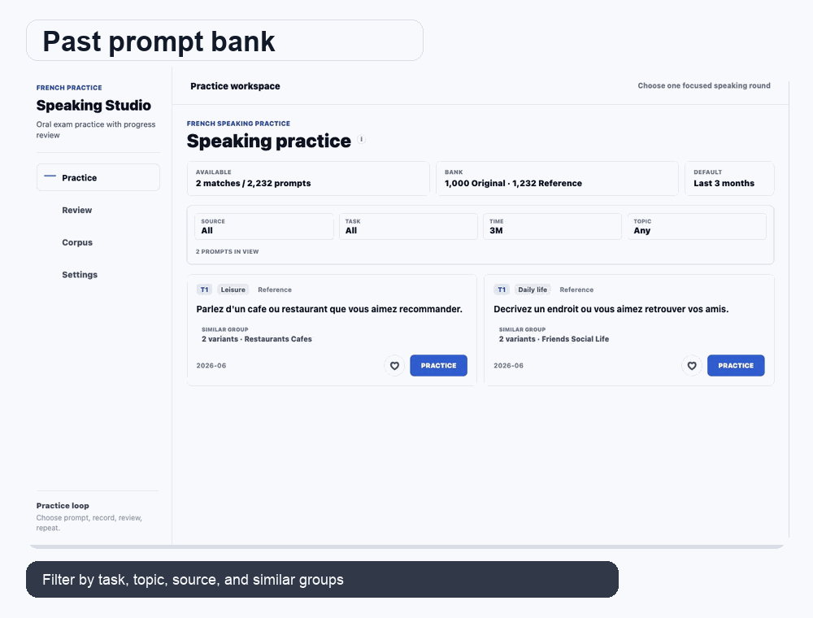
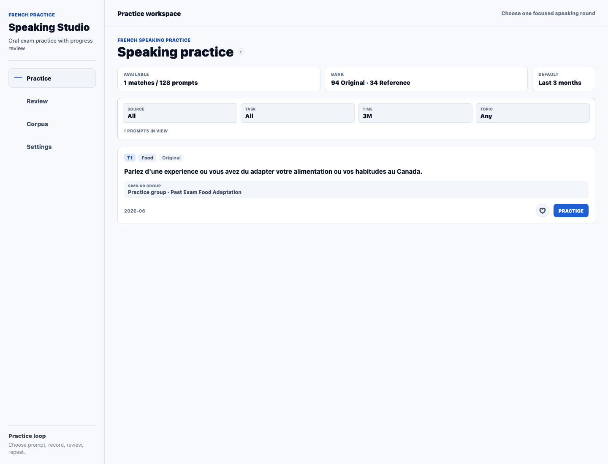
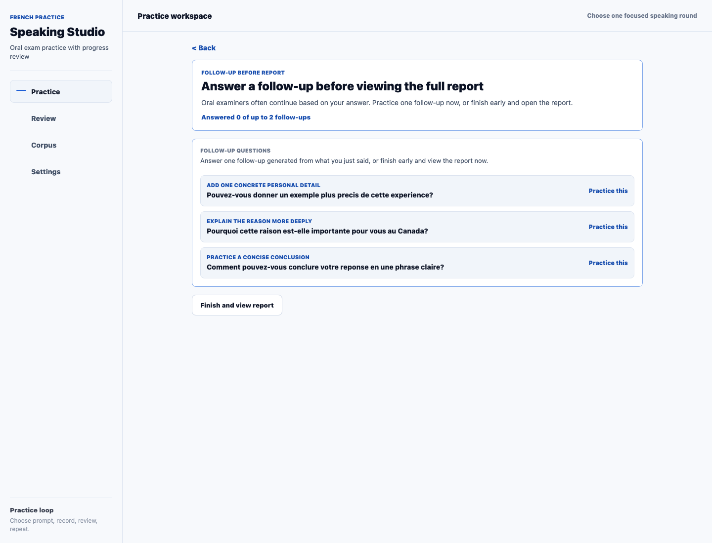
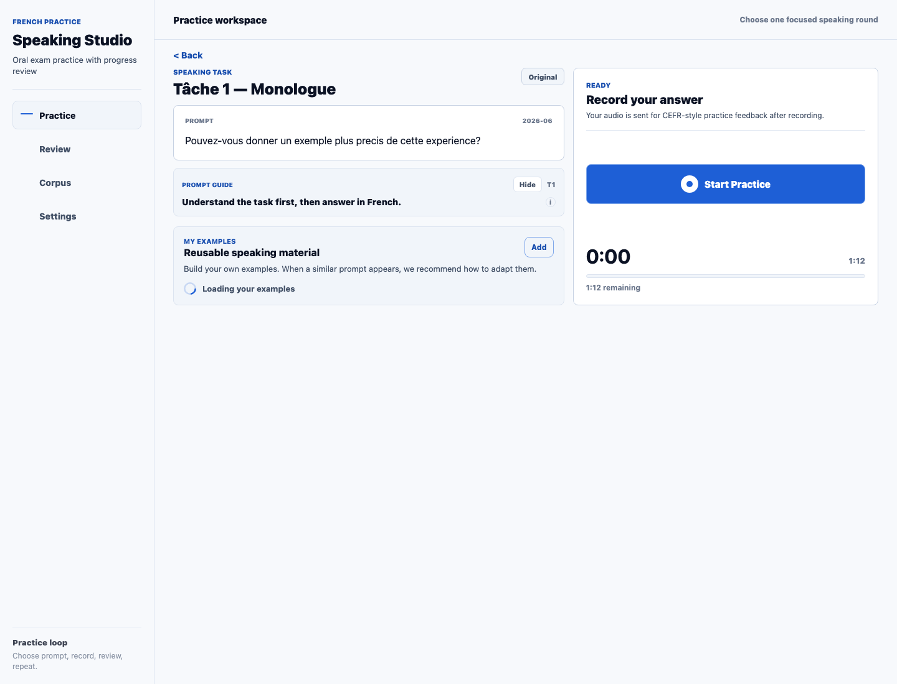
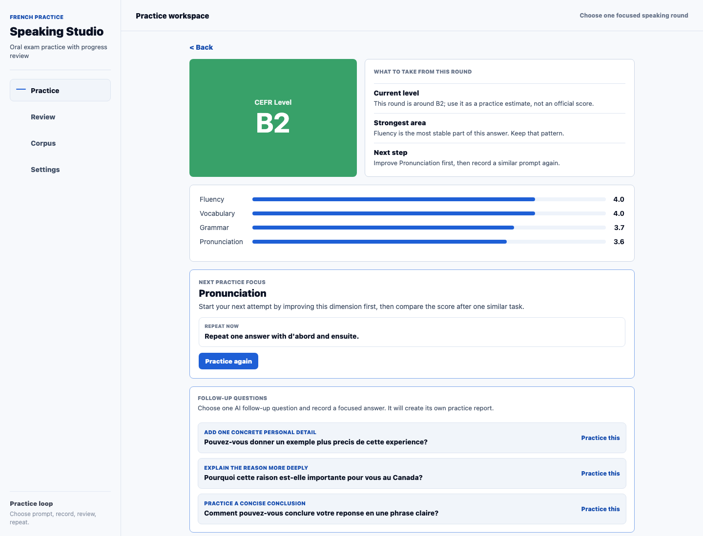
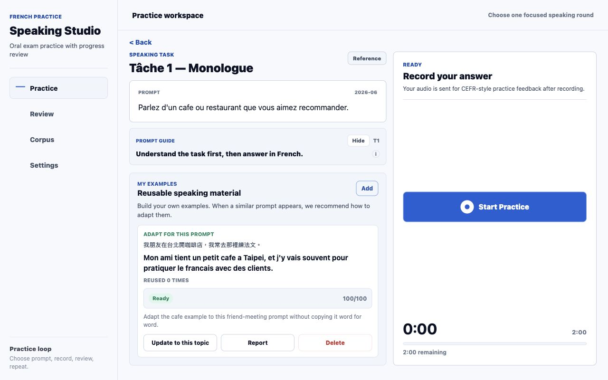
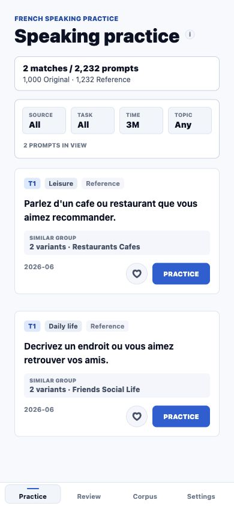

Browse prompt patterns
Past-exam inspired speaking prompts are collected into a practical study bank.
Past-exam inspired speaking practice with AI interaction
SpeakCanada AI helps independent learners practice from past-exam inspired French speaking questions, classify related topics, save reusable examples, and use AI follow-up questions to turn each answer into the next practice target.
Testing QR reserved
TestFlight QR reserved
Independent study product. AI feedback is learning guidance, not an official score.

The GIF shows the same product points with actual app screens.
Product workflow
Past-exam inspired speaking prompts are collected into a practical study bank.
Questions are classified by task, topic, subtopic, and similar prompt groups.
AI feedback creates follow-up questions so one answer becomes a short interaction.
Reusable personal examples help the app recommend related prompts for review.
Real product screens
The public page uses real product captures: prompt bank organization, AI follow-up practice, saved examples, and mobile review flow.

Task, time, topic, source, and similar prompt groups help learners find focused practice.

After T1 or T3, the app can ask examiner-style follow-up questions based on the learner's own answer. T2 is already a multi-turn examiner dialogue.

T1 main answer plus follow-ups stay inside 2:00. T3 main answer plus follow-ups stay inside 4:30. Learners can stop early, with a warning that short answers may affect the estimate.

The final report combines the main answer and practiced follow-ups, while still allowing optional extra follow-up practice.

Learners can save useful personal examples and adapt them to related topics later.

The core loop stays available for mobile testing and future app-store rollout.
AI interaction and topic memory
SpeakCanada AI is designed for learners who practice alone but still need interaction. After a T1 or T3 answer, the app can generate examiner-style follow-up questions from the learner's own details, reasons, or examples. T2 works as a live multi-turn conversation with the simulated examiner.
Practice, review, repeat
The experience stays focused on the learner's next useful action: pick a categorized speaking question, answer in French, save a reusable example, and return to related prompts that practice the same theme from another angle.
Privacy and safety
This page presents the product experience without exposing source code, credentials, internal prompts, operational details, release artifacts, or private user data.
Feedback is learning support, not an official exam result or guarantee.
Public materials avoid sensitive implementation and account details.
SpeakCanada AI is not affiliated with France Education International, any official exam provider, or any government agency.